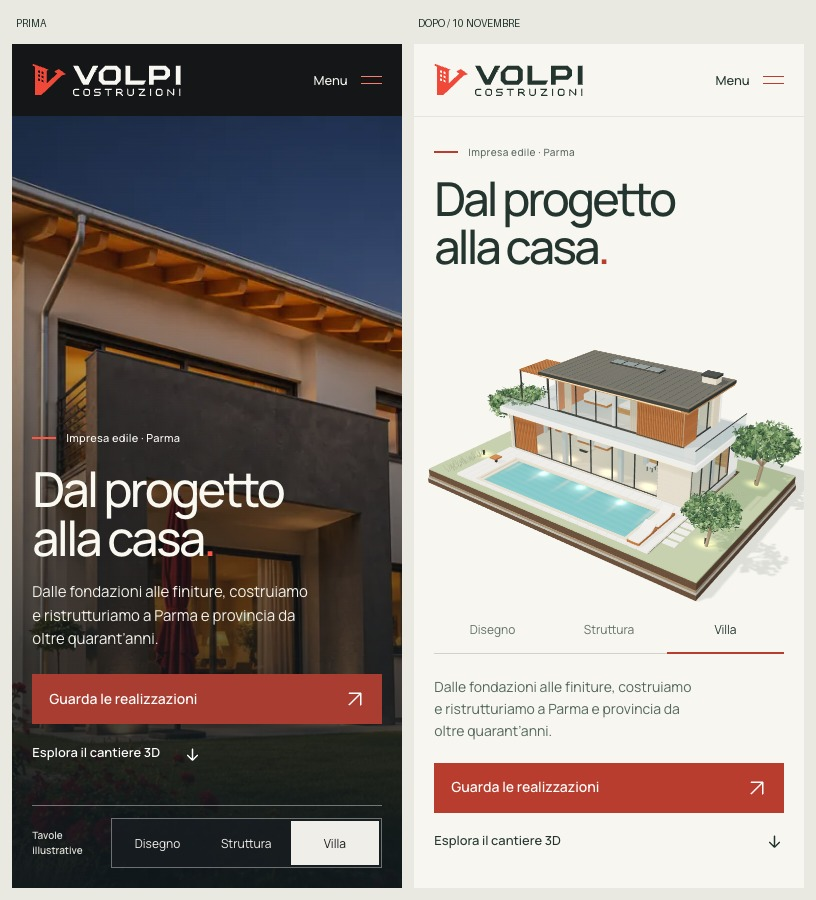
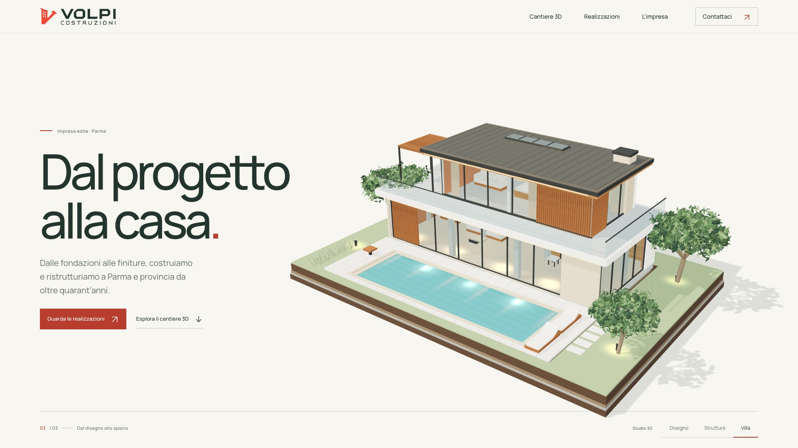

Apri il sitoVolpi, alla luce.
Verifica del 10 novembre 2026. La stessa villa 3D accompagna caricamento, copertina automatica e cantiere a scorrimento. Sei studi tridimensionali affiancano le fotografie reali, con costruzione reversibile e confronti espliciti.

Stesso schermo emulato, 390 × 844 pixel.Caricamento prima e dopo
| Profilo | Home utilizzabile | Dati iniziali |
|---|
| Telefono emulato | 4,355 → 4,387 s | 937 → 719 KB |
| Desktop | 4,375 → 4,376 s | 1.097 → 752 KB |
Mediana di tre visite: Chrome 157 su Mac M3 Pro, cache disabilitata, 10 Mbit/s download, 2 upload, latenza 40 ms, CPU 1×, DPR 2. Tempo fino al primo fotogramma con home interattiva. La costruzione della copertina prosegue automaticamente mentre i collegamenti sono già utilizzabili.
Scroll e controlli
Mobile: p95 16,7 ms, massimo 16,8 ms nella traversata dei sei progetti. Il desktop mantiene p95 16,7–16,8 ms, con picchi intermittenti al primo incontro con un modello: fino a 133,3 ms nelle repliche registrate. Nelle due repliche successive il massimo è 16,8 ms. Il carico iniziale rimane un limite osservato; non viene dichiarata fluidità perfetta su ogni dispositivo.
Costruzione ferma senza input e inversione della posa verificata. Chrome 8/8 percorsi e WebKit 4/4: ingresso, riavvio, menu, filtri, piscina, confronto da tastiera, chiusura con medesima posizione/filtro/focus, navigazione Indietro/Avanti, movimento ridotto, WebGL assente e immagine fallita con riprova. Layout 320 × 568 e 844 × 390 controllati.
Viewport e input simulati su Mac: nessun iPhone o Android fisico utilizzato. Non sono misure LCP/INP sul campo. I modelli sono interpretazioni illustrative delle fotografie, non rilievi tecnici. Geometrie decorative originali create con Higgsfield 3D Jutsu e integrate nei master Blender.Viste verificate
